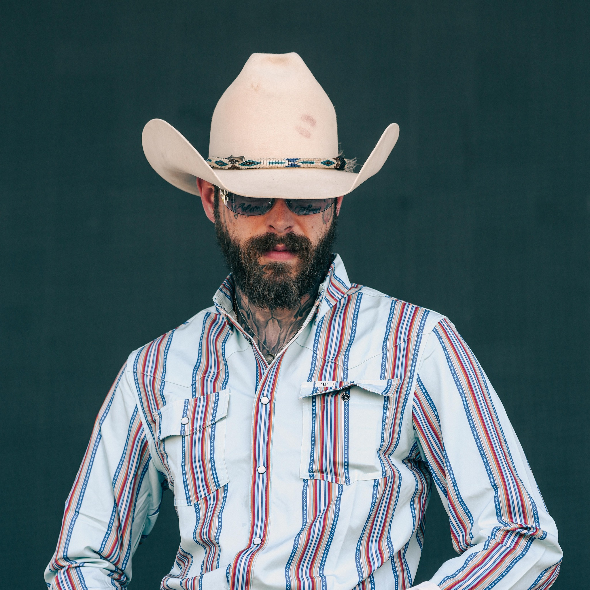

About Me
I am a motivated person who believes in self-improvement and continuous learning. I enjoy discovering new skills and working hard toward my goals.
My teenage life
During my teenage years, I went through many changes that helped shape who I am. I learned more about myself, my strengths, and my weaknesses. This stage taught me important lessons through mistakes, friendships, and experiences while still relying on guidance from the people around me.
My Adulthood
As I moved into adulthood, I began to take fully understand the life of adulthood and responsibility for my choices and actions. I learned how to make decisions on my own, handle challenges, and focus on my goals for the future. Adulthood pushed me to become more independent and apply what I learned during my teenage years to real life.
Hobbies
- Video Editing and editing games clips
- Listening to music
- Watching movies
- Playing online games
- playing chess
- jogging and hiking
- ilove to workout in gym
My Favorites
